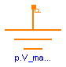

This library contains components for modelling of electromagnetic devices with lumped magnetic networks. Those models are suited for both rough design of the magnetic subsystem of a device as well as for efficient dynamic simulation at system level together with neighbouring subsystems. At present, components and examples for modelling of translatory electromagnetic and electrodynamic actuators are provided. If needed, these components can be adapted to network modellling of rotational electrical machines.
Users Guide gives a short introduction to the underlying concept of magnetic flux tubes, summarizes the calculation of magnetic reluctance forces from lumped magnetic network models and lists reference literature.
Examples illustrates the usage of magnetic network models with simple models from different fields of application.
| Name | Description |
|---|---|
| Users Guide | |
| Illustration of component usage with simple models of various devices | |
| Interfaces of magnetic network components | |
| Lumped elements representing flux tubes of different shapes | |
| Sources of different complexity of magnetomotive force and magnetic flux | |
| Magnetisation characteristics of common soft magnetic and hard magnetic materials | |
| Sensors to measure variables in magnetic networks | |
| Miscellaneous model components for modelling of actuators | |
| MagneticGround | Zero magnetic potential |

The magnetic potential at the magnetic ground node is zero. Every magnetic network model must contain at least one magnetic ground object.
| Type | Name | Description |
|---|---|---|
| MagneticPort | p |
model MagneticGround "Zero magnetic potential" Modelica_Magnetic.Interfaces.MagneticPort p; equation p.V_mag = 0; end MagneticGround;